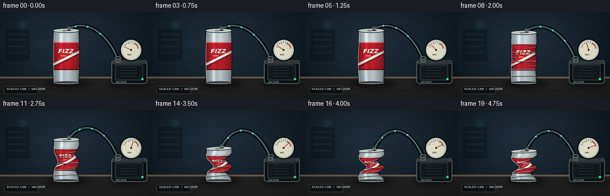
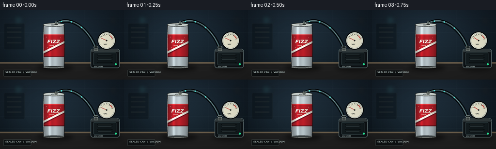

CODING AGENTS AS PIXEL WORLD MODELS
traex/GPT-5.6-Sol · mechanics_0022
点击播放 · 原生 RGB 像素
逐轮保存的候选
回放视频、检查图与代码变化。
每份候选均可单独播放。实际图片检查记录在下方工具轨迹中。
候选 01播放与检查图
点击播放 · 原生 RGB 像素


展开代码变化
--- 上一保存版本
+++ 本次保存版本
@@ -0,0 +1,291 @@
+from pathlib import Path
+import json, math
+import numpy as np
+from PIL import Image, ImageDraw, ImageFont, ImageFilter
+import artifact_io
+
+ROOT = Path(__file__).resolve().parent
+SPEC = json.loads((ROOT / 'task_spec.json').read_text())
+W, H, N = SPEC['width'], SPEC['height'], SPEC['frames']
+S = 4
+SW, SH = W*S, H*S
+rng = np.random.default_rng(2207)
+
+
+def sc(v):
+ if isinstance(v, (tuple, list)):
+ return tuple(int(round(x*S)) for x in v)
+ return int(round(v*S))
+
+
+def smooth(a, b, x):
+ z = np.clip((x-a)/(b-a), 0.0, 1.0)
+ return z*z*(3-2*z)
+
+
+def font(size, bold=False):
+ p = '/usr/share/fonts/truetype/dejavu/DejaVuSans-Bold.ttf' if bold else '/usr/share/fonts/truetype/dejavu/DejaVuSans.ttf'
+ return ImageFont.truetype(p, sc(size))
+
+# Fixed cinematic laboratory background.
+yy, xx = np.mgrid[0:SH, 0:SW]
+yn = yy / SH
+xn = xx / SW
+spot = np.exp(-(((xn-.43)/.44)**2 + ((yn-.42)/.62)**2))
+base = np.zeros((SH, SW, 3), dtype=np.float32)
+base[...,0] = 10 + 14*spot + 7*(1-yn)
+base[...,1] = 18 + 21*spot + 8*(1-yn)
+base[...,2] = 24 + 25*spot + 11*(1-yn)
+# subtle fixed sensor grain
+noise = rng.normal(0, 1.05, (SH, SW, 1))
+base += noise
+base = np.clip(base, 0, 255).astype(np.uint8)
+BACKGROUND = Image.fromarray(base, 'RGB')
+
+d = ImageDraw.Draw(BACKGROUND, 'RGBA')
+# Dim tiled wall and shelving detail.
+for y in (18, 46, 76, 101):
+ d.line((0, sc(y), SW, sc(y)), fill=(80,104,112,25), width=sc(.55))
+for x in (20, 63, 174, 247):
+ d.line((sc(x), 0, sc(x), sc(108)), fill=(72,95,103,18), width=sc(.5))
+d.rounded_rectangle(sc((8,27,51,82)), radius=sc(3), fill=(4,10,14,85), outline=(88,109,115,24), width=sc(1))
+for y in (35,44,55,66):
+ d.rectangle(sc((14,y,44,y+3)), fill=(42,51,52,90))
+# Defocused lab lights.
+glow = Image.new('RGBA', (SW,SH), (0,0,0,0)); gd=ImageDraw.Draw(glow)
+gd.ellipse(sc((29,12,47,30)), fill=(90,201,206,55))
+gd.ellipse(sc((229,16,239,26)), fill=(251,177,82,58))
+gd.ellipse(sc((181,30,187,36)), fill=(84,193,188,45))
+glow = glow.filter(ImageFilter.GaussianBlur(sc(6)))
+BACKGROUND = Image.alpha_composite(BACKGROUND.convert('RGBA'), glow).convert('RGB')
+# Bench top.
+d = ImageDraw.Draw(BACKGROUND, 'RGBA')
+d.polygon([sc((0,108)), sc((256,108)), sc((256,144)), sc((0,144))], fill=(31,31,31,255))
+d.rectangle(sc((0,108,256,111)), fill=(89,79,65,255))
+d.line(sc((0,109,256,109)), fill=(196,164,119,95), width=sc(.7))
+# front bevel / brushed streaks
+for y, a in [(117,28),(126,21),(137,14)]:
+ d.line(sc((0,y,256,y-1)), fill=(158,136,105,a), width=sc(.5))
+for x in range(4,256,19):
+ d.line(sc((x,111,x+8,143)), fill=(4,4,4,12), width=sc(.5))
+
+# Front-facing wrap texture used on the deforming can.
+TW, TH = 420, 900
+tex = Image.new('RGB', (TW,TH), (178,185,188))
+td = ImageDraw.Draw(tex)
+# brushed aluminum bands
+td.rectangle((0,0,TW,205), fill=(183,192,196))
+td.rectangle((0,680,TW,TH), fill=(167,177,181))
+# classic red soda wrap
+td.rectangle((0,205,TW,680), fill=(173,22,31))
+td.rectangle((0,205,TW,221), fill=(223,56,57))
+td.rectangle((0,662,TW,680), fill=(104,10,18))
+# diagonal white/silver dynamic swoosh
+td.polygon([(0,570),(0,645),(TW,400),(TW,340)], fill=(239,235,220))
+td.polygon([(0,614),(0,646),(TW,405),(TW,385)], fill=(112,12,24))
+# logo
+try:
+ fbig = ImageFont.truetype('/usr/share/fonts/truetype/dejavu/DejaVuSans-BoldOblique.ttf', 98)
+ fsmall = ImageFont.truetype('/usr/share/fonts/truetype/dejavu/DejaVuSans-Bold.ttf', 26)
+except Exception:
+ fbig, fsmall = ImageFont.load_default(), ImageFont.load_default()
+box = td.textbbox((0,0), 'FIZZ', font=fbig, stroke_width=2)
+tw = box[2]-box[0]
+td.text(((TW-tw)//2,300), 'FIZZ', font=fbig, fill=(252,245,222), stroke_width=3, stroke_fill=(112,12,20))
+td.text((129,421), 'SODA', font=fsmall, fill=(255,238,210))
+# tiny bubbles
+td.ellipse((58,252,76,270), outline=(249,146,139), width=4)
+td.ellipse((334,271,344,281), outline=(249,146,139), width=3)
+td.ellipse((81,474,94,487), outline=(255,228,205), width=3)
+TEXTURE = np.array(tex)
+
+
+def bezier(p0,p1,p2,p3,n=80):
+ u = np.linspace(0,1,n)[:,None]
+ pts = (1-u)**3*np.array(p0) + 3*(1-u)**2*u*np.array(p1) + 3*(1-u)*u*u*np.array(p2) + u**3*np.array(p3)
+ return [(sc(x),sc(y)) for x,y in pts]
+
+
+def geom(progress, samples=600):
+ # Height loss begins after wall buckling; the base stays planted on the bench.
+ c = smooth(.20, 1.0, progress)
+ h = 88.0 - 38.0*(c**1.16)
+ bottom = 118.3
+ top = bottom-h
+ v = np.linspace(0,1,samples)
+ g = lambda mu,sig: np.exp(-((v-mu)/sig)**2)
+ center = 111.0 + progress*(1.5*np.sin(2*np.pi*v+.3)) + c*(4.7*g(.52,.16)-2.7*g(.28,.11)-2.2*g(.77,.10))
+ basehalf = 22.2*(.95 + .07*np.sin(np.pi*v))
+ # Unequal inward dents make the failure look like a real vacuum buckle.
+ il = progress*3.0*g(.27,.09) + c*(12.7*g(.56,.13)+4.0*g(.80,.07))
+ ir = progress*4.2*g(.42,.105) + c*(11.8*g(.36,.115)+8.8*g(.72,.10))
+ ripple = c*2.4*np.sin(6*np.pi*v+.6)*np.sin(np.pi*v)**1.2
+ left = center - basehalf + il + ripple
+ right = center + basehalf - ir + .75*ripple
+ # retain a physically readable minimum section
+ right = np.maximum(right, left+10.0)
+ y = top + v*h
+ return v,y,left,right,top,bottom,c
+
+
+def interp(arr, v):
+ z = v*(len(arr)-1)
+ i = int(np.clip(math.floor(z),0,len(arr)-2)); f=z-i
+ return arr[i]*(1-f)+arr[i+1]*f
+
+
+def draw_shadow(im, progress):
+ c = smooth(.2,1,progress)
+ ov = Image.new('RGBA', im.size, (0,0,0,0)); od=ImageDraw.Draw(ov)
+ od.ellipse(sc((76+5*c,112,151-4*c,127)), fill=(0,0,0,120))
+ od.ellipse(sc((181,112,250,127)), fill=(0,0,0,105))
+ ov=ov.filter(ImageFilter.GaussianBlur(sc(4.5)))
+ return Image.alpha_composite(im.convert('RGBA'), ov)
+
+
+def draw_hose_and_pump(im, progress, top):
+ dr=ImageDraw.Draw(im,'RGBA')
+ # Curved reinforced hose, behind the can but visibly connected to it.
+ start=(116.0, top-2.4)
+ points=bezier(start,(143,9+top*.05),(181,34),(198,80),95)
+ dr.line(points, fill=(2,7,10,245), width=sc(7), joint='curve')
+ dr.line(points, fill=(47,68,73,210), width=sc(3), joint='curve')
+ dr.line([(x-sc(.8),y-sc(1.0)) for x,y in points], fill=(124,157,158,80), width=sc(.75), joint='curve')
+ # moving turquoise flow dashes travel from the sealed can toward the pump
+ phase=(progress*2.4)%1
+ for k in range(3):
+ u=(.13+.23*k+phase*.15)% .83
+ j=int(u*(len(points)-1)); x,y=points[j]
+ dr.ellipse((x-sc(1.45),y-sc(1.45),x+sc(1.45),y+sc(1.45)), fill=(83,216,207,160))
+ # Compact vacuum pump housing.
+ dr.rounded_rectangle(sc((187,80,247,120)), radius=sc(5), fill=(12,17,20,255), outline=(93,109,111,230), width=sc(1.2))
+ dr.polygon([sc((190,80)),sc((242,80)),sc((247,87)),sc((187,87))], fill=(48,57,59,255))
+ dr.rounded_rectangle(sc((193,88,240,114)), radius=sc(2), fill=(19,27,30,255), outline=(57,74,77,220), width=sc(1))
+ # vents and power light
+ for y in (93,98,103,108):
+ dr.line(sc((201,y,232,y)), fill=(4,8,9,220), width=sc(1.4))
+ dr.line(sc((202,y-.5,230,y-.5)), fill=(75,89,91,90), width=sc(.45))
+ dr.ellipse(sc((237,110,241,114)), fill=(44,241,158,230))
+ dr.text(sc((194,115)), 'VACUUM', font=font(3.7,True), fill=(144,159,159,210))
+ # inlet and coupling
+ dr.rectangle(sc((194,76,202,84)), fill=(60,67,66,255), outline=(130,137,131,230), width=sc(.8))
+ dr.ellipse(sc((193,74,203,79)), fill=(31,39,39,255), outline=(142,153,149,220), width=sc(.8))
+ # analog vacuum gauge
+ gx,gy,r=220,63,17
+ dr.ellipse(sc((gx-r-2,gy-r-2,gx+r+2,gy+r+2)), fill=(8,11,12,245))
+ dr.ellipse(sc((gx-r,gy-r,gx+r,gy+r)), fill=(176,183,174,255), outline=(220,224,211,255), width=sc(1))
+ dr.ellipse(sc((gx-r+2,gy-r+2,gx+r-2,gy+r-2)), fill=(225,223,201,255))
+ # vacuum scale and red danger sector
+ for j in range(10):
+ a=math.radians(205+j*(140/9))
+ r0=12 if j%3 else 10.5
+ p0=(gx+math.cos(a)*r0,gy+math.sin(a)*r0); p1=(gx+math.cos(a)*14,gy+math.sin(a)*14)
+ dr.line(sc((*p0,*p1)),fill=(31,39,39,230),width=sc(.7))
+ dr.arc(sc((gx-13,gy-13,gx+13,gy+13)), 303,342, fill=(188,42,37,230), width=sc(1.5))
+ dr.text(sc((gx-6.3,gy+6.0)), 'VAC',font=font(3.5,True),fill=(42,47,44,235))
+ # Needle rotates steadily toward deep vacuum.
+ ang=math.radians(205+progress*132)
+ ex=gx+math.cos(ang)*11.5; ey=gy+math.sin(ang)*11.5
+ dr.line(sc((gx,gy,ex,ey)),fill=(182,25,25,255),width=sc(1.1))
+ dr.ellipse(sc((gx-1.6,gy-1.6,gx+1.6,gy+1.6)),fill=(35,38,36,255))
+ return im
+
+
+def draw_can(im, progress):
+ v,y,left,right,top,bottom,c=geom(progress)
+ arr=np.asarray(im.convert('RGB')).copy()
+ # Inverse texture-map every scanline into the evolving silhouette.
+ y0=max(0,int((top-1)*S)); y1=min(SH-1,int((bottom+1)*S))
+ for py in range(y0,y1+1):
+ wy=(py+.5)/S
+ vv=np.clip((wy-top)/(bottom-top),0,1)
+ l=interp(left,vv); r=interp(right,vv)
+ x0=max(0,int(l*S)); x1=min(SW-1,int(r*S))
+ if x1<=x0: continue
+ xs=(np.arange(x0,x1+1)+.5)/S
+ uu=np.clip((xs-l)/(r-l),0,1)
+ ti=np.clip((uu*(TW-1)).astype(int),0,TW-1)
+ tj=int(np.clip(vv*(TH-1),0,TH-1))
+ col=TEXTURE[tj,ti].astype(np.float32)
+ q=2*uu-1
+ cylinder=.47+.50*np.sqrt(np.clip(1-q*q,0,1))
+ spec=.28*np.exp(-((q+.38)/.13)**2)+.09*np.exp(-((q-.14)/.22)**2)
+ rowfold=1 + c*.095*np.sin(vv*15*math.pi+1.0) * (math.sin(math.pi*vv)**1.3)
+ fac=(cylinder+spec)*rowfold
+ col=np.clip(col*fac[:,None]+np.array([5,7,8]),0,255)
+ arr[py,x0:x1+1]=col.astype(np.uint8)
+ out=Image.fromarray(arr,'RGB').convert('RGBA')
+ dr=ImageDraw.Draw(out,'RGBA')
+ # Silhouette edges and narrow side reflections.
+ lp=[(sc(x),sc(yy)) for x,yy in zip(left,y)]
+ rp=[(sc(x),sc(yy)) for x,yy in zip(right,y)]
+ dr.line(lp,fill=(26,30,31,245),width=sc(1.05),joint='curve')
+ dr.line(rp,fill=(19,22,24,245),width=sc(1.15),joint='curve')
+ dr.line([(x+sc(1),yy) for x,yy in lp],fill=(232,239,236,90),width=sc(.5),joint='curve')
+ # Horizontal compression creases grow in after the shell buckles.
+ if c>.04:
+ alpha=int(205*c)
+ for vv,phase in ((.24,0),(.40,1),(.58,2),(.74,3),(.87,4)):
+ l=interp(left,vv); r=interp(right,vv); yy=top+vv*(bottom-top)
+ xs=np.linspace(l+1.2,r-1.2,26)
+ ys=yy + c*(1.3*np.sin(np.linspace(0,math.pi,26)+phase*.5)-.6)
+ pts=[(sc(x),sc(z)) for x,z in zip(xs,ys)]
+ dr.line(pts,fill=(29,31,31,alpha),width=sc(.9),joint='curve')
+ dr.line([(x,y-sc(.65)) for x,y in pts],fill=(243,238,218,int(alpha*.42)),width=sc(.55),joint='curve')
+ # diagonal stress creases at the deepest dents
+ for va,side in ((.31,'r'),(.50,'l'),(.67,'r')):
+ yy=top+va*(bottom-top); l=interp(left,va); r=interp(right,va)
+ edge=r if side=='r' else l; mid=(l+r)/2
+ dr.line(sc((edge,yy,mid,yy+4.5*c)),fill=(34,31,29,int(170*c)),width=sc(.75))
+ dr.line(sc((edge,yy-1,mid,yy+3.5*c)),fill=(240,229,207,int(70*c)),width=sc(.5))
+ # Bottom rolled rim, kept on the surface.
+ bl,br=left[-1],right[-1]; bcx=(bl+br)/2; brx=(br-bl)/2+1
+ dr.ellipse(sc((bcx-brx,bottom-2.3,bcx+brx,bottom+2.3)),fill=(62,69,70,250),outline=(17,20,20,245),width=sc(.9))
+ dr.arc(sc((bcx-brx+.8,bottom-1.8,bcx+brx-.8,bottom+1.6)),5,175,fill=(232,236,225,190),width=sc(.75))
+ # Top rolled rim and lid; it survives while the walls fold beneath it.
+ tl,tr=left[0],right[0]; tcx=(tl+tr)/2; trx=(tr-tl)/2+1.3
+ tilt=-c*2.1
+ # sampled tilted ellipses
+ def ellipse_poly(rx,ry,n=90):
+ a=np.linspace(0,2*math.pi,n)
+ X=rx*np.cos(a); Y=ry*np.sin(a)
+ th=math.radians(tilt)
+ return [(sc(tcx+X[i]*math.cos(th)-Y[i]*math.sin(th)), sc(top+X[i]*math.sin(th)+Y[i]*math.cos(th))) for i in range(n)]
+ ep=ellipse_poly(trx,3.7-c*.5)
+ dr.polygon(ep,fill=(114,125,126,255)); dr.line(ep+[ep[0]],fill=(24,29,30,255),width=sc(1))
+ ip=ellipse_poly(max(2,trx-2.1),2.45-c*.35)
+ dr.polygon(ip,fill=(185,194,193,255)); dr.line(ip+[ip[0]],fill=(236,239,226,195),width=sc(.65))
+ # pull tab and airtight hose adapter
+ dr.ellipse(sc((tcx-6,top-.7,tcx+1.5,top+1.4)),outline=(70,78,78,235),width=sc(.75))
+ fx,fy=tcx+4.8,top-.9
+ dr.ellipse(sc((fx-4.3,fy-2.0,fx+4.3,fy+2.0)),fill=(27,32,32,255),outline=(194,200,188,230),width=sc(.8))
+ dr.rectangle(sc((fx-2.2,fy-5.0,fx+2.2,fy-.6)),fill=(81,91,88,255),outline=(201,205,190,240),width=sc(.6))
+ dr.ellipse(sc((fx-2.5,fy-6.0,fx+2.5,fy-4.0)),fill=(16,24,25,255),outline=(125,142,138,230),width=sc(.6))
+ return out
+
+
+def render(index):
+ t=index/(N-1)
+ # Pressure falls from the first frame to the last; eased motion reads as timelapse.
+ p=float(smooth(.02,.98,t))
+ _,_,_,_,top,_,_=geom(p)
+ im=BACKGROUND.convert('RGBA')
+ im=draw_shadow(im,p)
+ im=draw_hose_and_pump(im,p,top)
+ im=draw_can(im,p)
+ # tiny unobtrusive test plate on the bench edge
+ dr=ImageDraw.Draw(im,'RGBA')
+ dr.rounded_rectangle(sc((7,124,64,137)),radius=sc(1.5),fill=(15,18,19,180),outline=(94,103,101,90),width=sc(.5))
+ dr.text(sc((11,126)), 'SEALED CAN / VACUUM',font=font(4.7,True),fill=(170,185,182,210))
+ # cinematic vignette
+ a=np.asarray(im.convert('RGB')).astype(np.float32)
+ gy,gx=np.mgrid[0:SH,0:SW]
+ dx=(gx-SW*.5)/(SW*.67); dy=(gy-SH*.49)/(SH*.72)
+ vig=np.clip(1-.24*np.maximum(0,dx*dx+dy*dy-.2),.67,1)[...,None]
+ a=np.clip(a*vig,0,255).astype(np.uint8)
+ small=Image.fromarray(a).resize((W,H),Image.Resampling.LANCZOS)
+ return np.array(small,dtype=np.uint8)
+
+frames=np.stack([render(i) for i in range(N)],axis=0)
+artifact_io.save(frames, ROOT)
+print(f'saved {frames.shape} {frames.dtype}; range={frames.min()}..{frames.max()}')
可观测工具轨迹
实际执行的命令与返回图片。
命令 1exit 0
/bin/bash -lc "cat prompt.txt && printf '\\n--- GENERATION_RULES.md ---\\n' && cat GENERATION_RULES.md"
命令 2exit 0
/bin/bash -lc "cat task_spec.json && printf '\\n--- files ---\\n' && find . -maxdepth 2 -type f -printf '%p %s bytes\\n' | sort"
命令 3exit 0
/bin/bash -lc "command -v ffmpeg; command -v blender; command -v python3; python3 - <<'PY' mods=['cv2','numpy','PIL','matplotlib','scipy'] for m in mods: try: x=__import__(m); print(m, getattr(x,'__version__','ok')) except Exception as e: print(m,'MISSING',e) PY"
命令 4exit 0
/bin/bash -lc "sed -n '1,240p' artifact_io.py"
命令 5exit 0
/bin/bash -lc "cat > generate.py <<'PY'
from pathlib import Path
import json, math
import numpy as np
from PIL import Image, ImageDraw, ImageFont, ImageFilter
import artifact_io
ROOT = Path(__file__).resolve().parent
SPEC = json.loads((ROOT / 'task_spec.json').read_text())
W, H, N = SPEC['width'], SPEC['height'], SPEC['frames']
S = 4
SW, SH = W*S, H*S
rng = np.random.default_rng(2207)
def sc(v):
if isinstance(v, (tuple, list)):
return tuple(int(round(x*S)) for x in v)
return int(round(v*S))
def smooth(a, b, x):
z = np.clip((x-a)/(b-a), 0.0, 1.0)
return z*z*(3-2*z)
def font(size, bold=False):
p = '/usr/share/fonts/truetype/dejavu/DejaVuSans-Bold.ttf' if bold else '/usr/share/fonts/truetype/dejavu/DejaVuSans.ttf'
return ImageFont.truetype(p, sc(size))
# Fixed cinematic laboratory background.
yy, xx = np.mgrid[0:SH, 0:SW]
yn = yy / SH
xn = xx / SW
spot = np.exp(-(((xn-.43)/.44)**2 + ((yn-.42)/.62)**2))
base = np.zeros((SH, SW, 3), dtype=np.float32)
base[...,0] = 10 + 14*spot + 7*(1-yn)
base[...,1] = 18 + 21*spot + 8*(1-yn)
base[...,2] = 24 + 25*spot + 11*(1-yn)
# subtle fixed sensor grain
noise = rng.normal(0, 1.05, (SH, SW, 1))
base += noise
base = np.clip(base, 0, 255).astype(np.uint8)
BACKGROUND = Image.fromarray(base, 'RGB')
d = ImageDraw.Draw(BACKGROUND, 'RGBA')
# Dim tiled wall and shelving detail.
for y in (18, 46, 76, 101):
d.line((0, sc(y), SW, sc(y)), fill=(80,104,112,25), width=sc(.55))
for x in (20, 63, 174, 247):
d.line((sc(x), 0, sc(x), sc(108)), fill=(72,95,103,18), width=sc(.5))
d.rounded_rectangle(sc((8,27,51,82)), radius=sc(3), fill=(4,10,14,85), outline=(88,109,115,24), width=sc(1))
for y in (35,44,55,66):
d.rectangle(sc((14,y,44,y+3)), fill=(42,51,52,90))
# Defocused lab lights.
glow = Image.new('RGBA', (SW,SH), (0,0,0,0)); gd=ImageDraw.Draw(glow)
gd.ellipse(sc((29,12,47,30)), fill=(90,201,206,55))
gd.ellipse(sc((229,16,239,26)), fill=(251,177,82,58))
gd.ellipse(sc((181,30,187,36)), fill=(84,193,188,45))
glow = glow.filter(ImageFilter.GaussianBlur(sc(6)))
BACKGROUND = Image.alpha_composite(BACKGROUND.convert('RGBA'), glow).convert('RGB')
# Bench top.
d = ImageDraw.Draw(BACKGROUND, 'RGBA')
d.polygon([sc((0,108)), sc((256,108)), sc((256,144)), sc((0,144))], fill=(31,31,31,255))
d.rectangle(sc((0,108,256,111)), fill=(89,79,65,255))
d.line(sc((0,109,256,109)), fill=(196,164,119,95), width=sc(.7))
# front bevel / brushed streaks
for y, a in [(117,28),(126,21),(137,14)]:
d.line(sc((0,y,256,y-1)), fill=(158,136,105,a), width=sc(.5))
for x in range(4,256,19):
d.line(sc((x,111,x+8,143)), fill=(4,4,4,12), width=sc(.5))
# Front-facing wrap texture used on the deforming can.
TW, TH = 420, 900
tex = Image.new('RGB', (TW,TH), (178,185,188))
td = ImageDraw.Draw(tex)
# brushed aluminum bands
td.rectangle((0,0,TW,205), fill=(183,192,196))
td.rectangle((0,680,TW,TH), fill=(167,177,181))
# classic red soda wrap
td.rectangle((0,205,TW,680), fill=(173,22,31))
td.rectangle((0,205,TW,221), fill=(223,56,57))
td.rectangle((0,662,TW,680), fill=(104,10,18))
# diagonal white/silver dynamic swoosh
td.polygon([(0,570),(0,645),(TW,400),(TW,340)], fill=(239,235,220))
td.polygon([(0,614),(0,646),(TW,405),(TW,385)], fill=(112,12,24))
# logo
try:
fbig = ImageFont.truetype('/usr/share/fonts/truetype/dejavu/DejaVuSans-BoldOblique.ttf', 98)
fsmall = ImageFont.truetype('/usr/share/fonts/truetype/dejavu/DejaVuSans-Bold.ttf', 26)
except Exception:
fbig, fsmall = ImageFont.load_default(), ImageFont.load_default()
box = td.textbbox((0,0), 'FIZZ', font=fbig, stroke_width=2)
tw = box[2]-box[0]
td.text(((TW-tw)//2,300), 'FIZZ', font=fbig, fill=(252,245,222), stroke_width=3, stroke_fill=(112,12,20))
td.text((129,421), 'SODA', font=fsmall, fill=(255,238,210))
# tiny bubbles
td.ellipse((58,252,76,270), outline=(249,146,139), width=4)
td.ellipse((334,271,344,281), outline=(249,146,139), width=3)
td.ellipse((81,474,94,487), outline=(255,228,205), width=3)
TEXTURE = np.array(tex)
def bezier(p0,p1,p2,p3,n=80):
u = np.linspace(0,1,n)[:,None]
pts = (1-u)**3*np.array(p0) + 3*(1-u)**2*u*np.array(p1) + 3*(1-u)*u*u*np.array(p2) + u**3*np.array(p3)
return [(sc(x),sc(y)) for x,y in pts]
def geom(progress, samples=600):
# Height loss begins after wall buckling; the base stays planted on the bench.
c = smooth(.20, 1.0, progress)
h = 88.0 - 38.0*(c**1.16)
bottom = 118.3
top = bottom-h
v = np.linspace(0,1,samples)
g = lambda mu,sig: np.exp(-((v-mu)/sig)**2)
center = 111.0 + progress*(1.5*np.sin(2*np.pi*v+.3)) + c*(4.7*g(.52,.16)-2.7*g(.28,.11)-2.2*g(.77,.10))
basehalf = 22.2*(.95 + .07*np.sin(np.pi*v))
# Unequal inward dents make the failure look like a real vacuum buckle.
il = progress*3.0*g(.27,.09) + c*(12.7*g(.56,.13)+4.0*g(.80,.07))
ir = progress*4.2*g(.42,.105) + c*(11.8*g(.36,.115)+8.8*g(.72,.10))
ripple = c*2.4*np.sin(6*np.pi*v+.6)*np.sin(np.pi*v)**1.2
left = center - basehalf + il + ripple
right = center + basehalf - ir + .75*ripple
# retain a physically readable minimum section
right = np.maximum(right, left+10.0)
y = top + v*h
return v,y,left,right,top,bottom,c
def interp(arr, v):
z = v*(len(arr)-1)
i = int(np.clip(math.floor(z),0,len(arr)-2)); f=z-i
return arr[i]*(1-f)+arr[i+1]*f
def draw_shadow(im, progress):
c = smooth(.2,1,progress)
ov = Image.new('RGBA', im.size, (0,0,0,0)); od=ImageDraw.Draw(ov)
od.ellipse(sc((76+5*c,112,151-4*c,127)), fill=(0,0,0,120))
od.ellipse(sc((181,112,250,127)), fill=(0,0,0,105))
ov=ov.filter(ImageFilter.GaussianBlur(sc(4.5)))
return Image.alpha_composite(im.convert('RGBA'), ov)
def draw_hose_and_pump(im, progress, top):
dr=ImageDraw.Draw(im,'RGBA')
# Curved reinforced hose, behind the can but visibly connected to it.
start=(116.0, top-2.4)
points=bezier(start,(143,9+top*.05),(181,34),(198,80),95)
dr.line(points, fill=(2,7,10,245), width=sc(7), joint='curve')
dr.line(points, fill=(47,68,73,210), width=sc(3), joint='curve')
dr.line([(x-sc(.8),y-sc(1.0)) for x,y in points], fill=(124,157,158,80), width=sc(.75), joint='curve')
# moving turquoise flow dashes travel from the sealed can toward the pump
phase=(progress*2.4)%1
for k in range(3):
u=(.13+.23*k+phase*.15)% .83
j=int(u*(len(points)-1)); x,y=points[j]
dr.ellipse((x-sc(1.45),y-sc(1.45),x+sc(1.45),y+sc(1.45)), fill=(83,216,207,160))
# Compact vacuum pump housing.
dr.rounded_rectangle(sc((187,80,247,120)), radius=sc(5), fill=(12,17,20,255), outline=(93,109,111,230), width=sc(1.2))
dr.polygon([sc((190,80)),sc((242,80)),sc((247,87)),sc((187,87))], fill=(48,57,59,255))
dr.rounded_rectangle(sc((193,88,240,114)), radius=sc(2), fill=(19,27,30,255), outline=(57,74,77,220), width=sc(1))
# vents and power light
for y in (93,98,103,108):
dr.line(sc((201,y,232,y)), fill=(4,8,9,220), width=sc(1.4))
dr.line(sc((202,y-.5,230,y-.5)), fill=(75,89,91,90), width=sc(.45))
dr.ellipse(sc((237,110,241,114)), fill=(44,241,158,230))
dr.text(sc((194,115)), 'VACUUM', font=font(3.7,True), fill=(144,159,159,210))
# inlet and coupling
dr.rectangle(sc((194,76,202,84)), fill=(60,67,66,255), outline=(130,137,131,230), width=sc(.8))
dr.ellipse(sc((193,74,203,79)), fill=(31,39,39,255), outline=(142,153,149,220), width=sc(.8))
# analog vacuum gauge
gx,gy,r=220,63,17
dr.ellipse(sc((gx-r-2,gy-r-2,gx+r+2,gy+r+2)), fill=(8,11,12,245))
dr.ellipse(sc((gx-r,gy-r,gx+r,gy+r)), fill=(176,183,174,255), outline=(220,224,211,255), width=sc(1))
dr.ellipse(sc((gx-r+2,gy-r+2,gx+r-2,gy+r-2)), fill=(225,223,201,255))
# vacuum scale and red danger sector
for j in range(10):
a=math.radians(205+j*(140/9))
r0=12 if j%3 else 10.5
p0=(gx+math.cos(a)*r0,gy+math.sin(a)*r0); p1=(gx+math.cos(a)*14,gy+math.sin(a)*14)
dr.line(sc((*p0,*p1)),fill=(31,39,39,230),width=sc(.7))
dr.arc(sc((gx-13,gy-13,gx+13,gy+13)), 303,342, fill=(188,42,37,230), width=sc(1.5))
dr.text(sc((gx-6.3,gy+6.0)), 'VAC',font=font(3.5,True),fill=(42,47,44,235))
# Needle rotates steadily toward deep vacuum.
ang=math.radians(205+progress*132)
ex=gx+math.cos(ang)*11.5; ey=gy+math.sin(ang)*11.5
dr.line(sc((gx,gy,ex,ey)),fill=(182,25,25,255),width=sc(1.1))
dr.ellipse(sc((gx-1.6,gy-1.6,gx+1.6,gy+1.6)),fill=(35,38,36,255))
return im
def draw_can(im, progress):
v,y,left,right,top,bottom,c=geom(progress)
arr=np.asarray(im.convert('RGB')).copy()
# Inverse texture-map every scanline into the evolving silhouette.
y0=max(0,int((top-1)*S)); y1=min(SH-1,int((bottom+1)*S))
for py in range(y0,y1+1):
wy=(py+.5)/S
vv=np.clip((wy-top)/(bottom-top),0,1)
l=interp(left,vv); r=interp(right,vv)
x0=max(0,int(l*S)); x1=min(SW-1,int(r*S))
if x1<=x0: continue
xs=(np.arange(x0,x1+1)+.5)/S
uu=np.clip((xs-l)/(r-l),0,1)
ti=np.clip((uu*(TW-1)).astype(int),0,TW-1)
tj=int(np.clip(vv*(TH-1),0,TH-1))
col=TEXTURE[tj,ti].astype(np.float32)
q=2*uu-1
cylinder=.47+.50*np.sqrt(np.clip(1-q*q,0,1))
spec=.28*np.exp(-((q+.38)/.13)**2)+.09*np.exp(-((q-.14)/.22)**2)
rowfold=1 + c*.095*np.sin(vv*15*math.pi+1.0) * (math.sin(math.pi*vv)**1.3)
fac=(cylinder+spec)*rowfold
col=np.clip(col*fac[:,None]+np.array([5,7,8]),0,255)
arr[py,x0:x1+1]=col.astype(np.uint8)
out=Image.fromarray(arr,'RGB').convert('RGBA')
dr=ImageDraw.Draw(out,'RGBA')
# Silhouette edges and narrow side reflections.
lp=[(sc(x),sc(yy)) for x,yy in zip(left,y)]
rp=[(sc(x),sc(yy)) for x,yy in zip(right,y)]
dr.line(lp,fill=(26,30,31,245),width=sc(1.05),joint='curve')
dr.line(rp,fill=(19,22,24,245),width=sc(1.15),joint='curve')
dr.line([(x+sc(1),yy) for x,yy in lp],fill=(232,239,236,90),width=sc(.5),joint='curve')
# Horizontal compression creases grow in after the shell buckles.
if c>.04:
alpha=int(205*c)
for vv,phase in ((.24,0),(.40,1),(.58,2),(.74,3),(.87,4)):
l=interp(left,vv); r=interp(right,vv); yy=top+vv*(bottom-top)
xs=np.linspace(l+1.2,r-1.2,26)
ys=yy + c*(1.3*np.sin(np.linspace(0,math.pi,26)+phase*.5)-.6)
pts=[(sc(x),sc(z)) for x,z in zip(xs,ys)]
dr.line(pts,fill=(29,31,31,alpha),width=sc(.9),joint='curve')
dr.line([(x,y-sc(.65)) for x,y in pts],fill=(243,238,218,int(alpha*.42)),width=sc(.55),joint='curve')
# diagonal stress creases at the deepest dents
for va,side in ((.31,'r'),(.50,'l'),(.67,'r')):
yy=top+va*(bottom-top); l=interp(left,va); r=interp(right,va)
edge=r if side=='r' else l; mid=(l+r)/2
dr.line(sc((edge,yy,mid,yy+4.5*c)),fill=(34,31,29,int(170*c)),width=sc(.75))
dr.line(sc((edge,yy-1,mid,yy+3.5*c)),fill=(240,229,207,int(70*c)),width=sc(.5))
# Bottom rolled rim, kept on the surface.
bl,br=left[-1],right[-1]; bcx=(bl+br)/2; brx=(br-bl)/2+1
dr.ellipse(sc((bcx-brx,bottom-2.3,bcx+brx,bottom+2.3)),fill=(62,69,70,250),outline=(17,20,20,245),width=sc(.9))
dr.arc(sc((bcx-brx+.8,bottom-1.8,bcx+brx-.8,bottom+1.6)),5,175,fill=(232,236,225,190),width=sc(.75))
# Top rolled rim and lid; it survives while the walls fold beneath it.
tl,tr=left[0],right[0]; tcx=(tl+tr)/2; trx=(tr-tl)/2+1.3
tilt=-c*2.1
# sampled tilted ellipses
def ellipse_poly(rx,ry,n=90):
a=np.linspace(0,2*math.pi,n)
X=rx*np.cos(a); Y=ry*np.sin(a)
th=math.radians(tilt)
return [(sc(tcx+X[i]*math.cos(th)-Y[i]*math.sin(th)), sc(top+X[i]*math.sin(th)+Y[i]*math.cos(th))) for i in range(n)]
ep=ellipse_poly(trx,3.7-c*.5)
dr.polygon(ep,fill=(114,125,126,255)); dr.line(ep+[ep[0]],fill=(24,29,30,255),width=sc(1))
ip=ellipse_poly(max(2,trx-2.1),2.45-c*.35)
dr.polygon(ip,fill=(185,194,193,255)); dr.line(ip+[ip[0]],fill=(236,239,226,195),width=sc(.65))
# pull tab and airtight hose adapter
dr.ellipse(sc((tcx-6,top-.7,tcx+1.5,top+1.4)),outline=(70,78,78,235),width=sc(.75))
fx,fy=tcx+4.8,top-.9
dr.ellipse(sc((fx-4.3,fy-2.0,fx+4.3,fy+2.0)),fill=(27,32,32,255),outline=(194,200,188,230),width=sc(.8))
dr.rectangle(sc((fx-2.2,fy-5.0,fx+2.2,fy-.6)),fill=(81,91,88,255),outline=(201,205,190,240),width=sc(.6))
dr.ellipse(sc((fx-2.5,fy-6.0,fx+2.5,fy-4.0)),fill=(16,24,25,255),outline=(125,142,138,230),width=sc(.6))
return out
def render(index):
t=index/(N-1)
# Pressure falls from the first frame to the last; eased motion reads as timelapse.
p=float(smooth(.02,.98,t))
_,_,_,_,top,_,_=geom(p)
im=BACKGROUND.convert('RGBA')
im=draw_shadow(im,p)
im=draw_hose_and_pump(im,p,top)
im=draw_can(im,p)
# tiny unobtrusive test plate on the bench edge
dr=ImageDraw.Draw(im,'RGBA')
dr.rounded_rectangle(sc((7,124,64,137)),radius=sc(1.5),fill=(15,18,19,180),outline=(94,103,101,90),width=sc(.5))
dr.text(sc((11,126)), 'SEALED CAN / VACUUM',font=font(4.7,True),fill=(170,185,182,210))
# cinematic vignette
a=np.asarray(im.convert('RGB')).astype(np.float32)
gy,gx=np.mgrid[0:SH,0:SW]
dx=(gx-SW*.5)/(SW*.67); dy=(gy-SH*.49)/(SH*.72)
vig=np.clip(1-.24*np.maximum(0,dx*dx+dy*dy-.2),.67,1)[...,None]
a=np.clip(a*vig,0,255).astype(np.uint8)
small=Image.fromarray(a).resize((W,H),Image.Resampling.LANCZOS)
return np.array(small,dtype=np.uint8)
frames=np.stack([render(i) for i in range(N)],axis=0)
artifact_io.save(frames, ROOT)
print(f'saved {frames.shape} {frames.dtype}; range={frames.min()}..{frames.max()}')
PY
python3 generate.py
ls -lh pixels.npz index.html inspection.png transition_check.png frames/00.png frames/19.png"命令 6exit 0
/bin/bash -lc "python3 - <<'PY'
from pathlib import Path
import numpy as np
from PIL import Image
fs=[]
for p in sorted(Path('frames').glob('*.png')):
im=np.array(Image.open(p))
assert im.shape==(144,256,3) and im.dtype==np.uint8
fs.append(im)
f=np.stack(fs)
print('frames',f.shape,f.dtype)
print('means',np.round(f.mean((1,2,3)),2).tolist())
d=np.abs(np.diff(f.astype(np.int16),axis=0))
print('adjacent MAD',np.round(d.mean((1,2,3)),3).tolist())
print('changed pixels %',np.round(np.any(d>3,axis=3).mean((1,2))*100,2).tolist())
# packed artifact roundtrip
p=np.load('pixels.npz')['pixels']
assert p.shape==(144,256,20)
un=np.stack([((p>>16)&255),((p>>8)&255),(p&255)],axis=-1).transpose(2,0,1,3).astype(np.uint8)
print('npz exact:',np.array_equal(un,f),'first-last MAD',np.abs(f[-1].astype(int)-f[0].astype(int)).mean())
PY"命令 7exit 0
/bin/bash -lc 'python3 -m py_compile generate.py artifact_io.py && test -s index.html && test -s pixels.npz && test $(find frames -name '"'*.png' | wc -l) -eq 20 && echo 'validation passed' && du -sh ."
保存候选 1 份；完成命令 7 次；可验证图片返回 0 张。原始 API 响应与完整日志保留在本地。